Computersysteme
Welcome and Introduction
Simon Mayer, Karim Khamaisi, Luka Bekavac
University of St.Gallen
Bachelor in Computer Science
Computersysteme (1,904)
From insight to impact.
Course Team
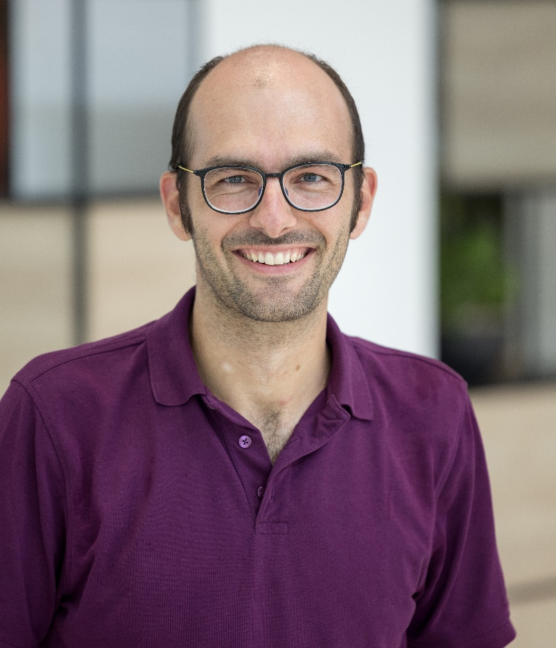
Prof. Dr. Simon Mayer
Chair for Interaction- and
Communication-based Systems
Luka Bekavac, MSc
Doctoral student on systemic risks
in very large online platforms
Karim Khamaisi, MSc
Doctoral student on
embedded sensing systems
Computersysteme | Institute of Computer Science | University of St.Gallen
2What would you have studied if not CS?
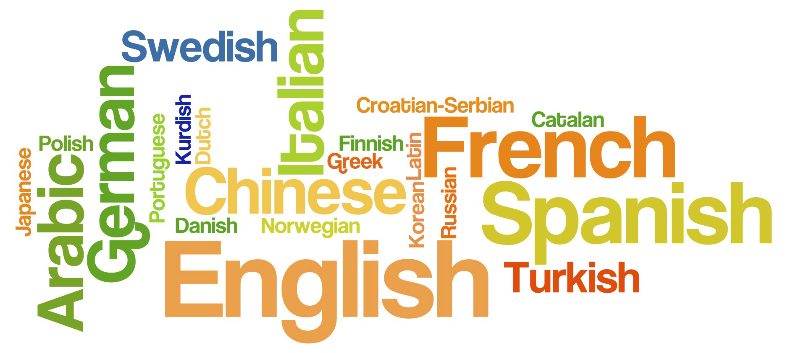
Computersysteme | Institute of Computer Science | University of St.Gallen
3Simon
- PhD in Computer Science, ETH Zurich (2010-2014)
- Siemens Corporate Technology, Berkeley (2014-2017); Pro²Future and TU Graz (2017-2018); ETH Zurich (2018-2020)
- Professor for Interaction- and Communication-based Systems, University of St.Gallen (since 2018)
- Director, Institute of Computer Science (since 2019); Dean, School of Computer Science (2024-2026)
- Lecturer at ETH Zurich, MIT, UC Berkeley, TU Graz, University of Zurich and University of Bologna
- 3 children, backcountry snowboarding
Computersysteme | Institute of Computer Science | University of St.Gallen
4Our Research Group
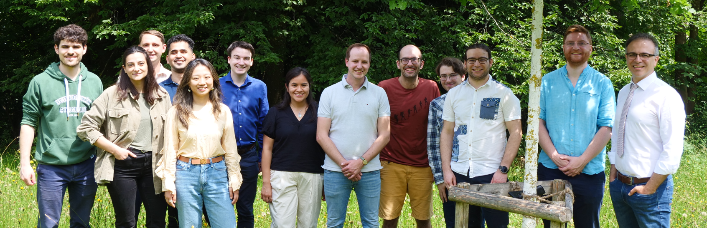
Computersysteme | Institute of Computer Science | University of St.Gallen
5Open Your Eyes!
A text on a screen changes while the reader's eyes are closed. Which changes do readers notice? This is blink-induced change blindness.
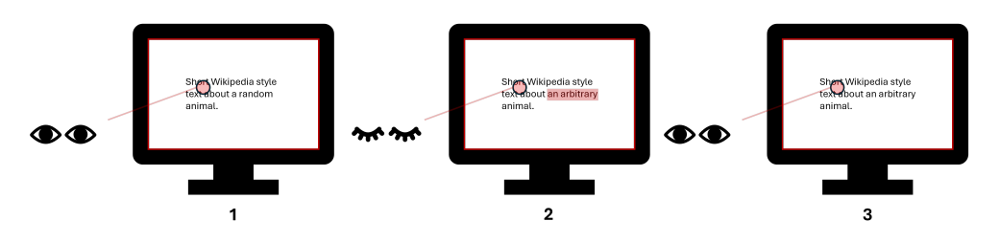
Schultz, Bektas, Strecker-Bischoff, Mayer: Open your Eyes: Blink-induced Change Blindness while Reading. UbiComp 2025. Paper
Computersysteme | Institute of Computer Science | University of St.Gallen
6Turning this into BlinkArt ;-)
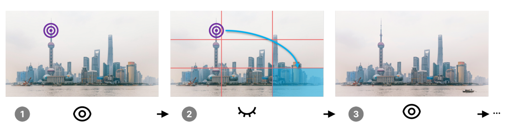
Steinmann, Strecker-Bischoff, Bektas, Williams, Mayer: BlinkArt: Using Change Blindness For AI-Generated Image Modifications in Artworks. UbiComp 2026
Computersysteme | Institute of Computer Science | University of St.Gallen
7Introducing: The «For You» Portrait
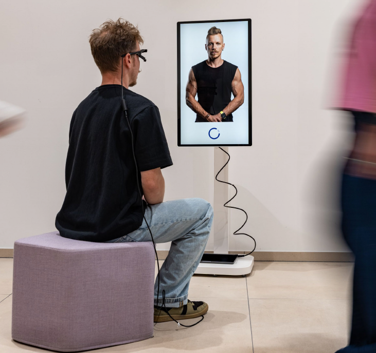
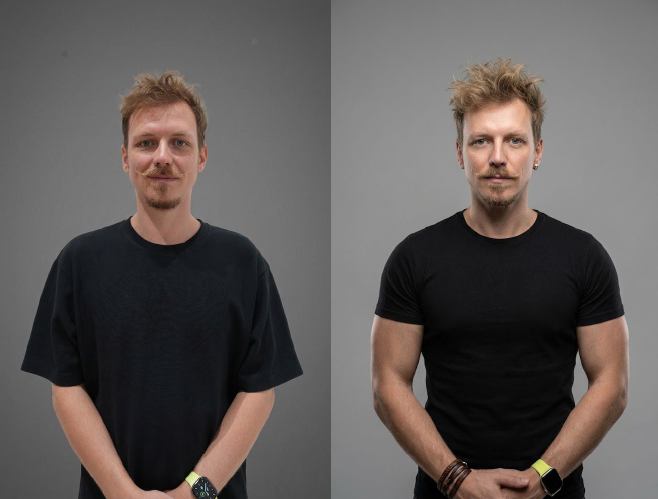
Steinmann, Strecker-Bischoff, Bektas, Williams, Mayer: BlinkArt: Using Change Blindness For AI-Generated Image Modifications in Artworks. UbiComp 2026
Computersysteme | Institute of Computer Science | University of St.Gallen
8Interactions: QR Codes That React to Touch
- A standard QR code with 3 standard ArUco markers
- The markers are embedded with a thermoresponsive material, which changes its color with temperature
- So the QR code reacts when you touch it
Jenss, Mayer: QRUco: Interactive QR Codes Through Thermoresponsive Embeddings. CHI 2023. Paper & video
Computersysteme | Institute of Computer Science | University of St.Gallen
9Interactions: Identifying Objects in Mixed Reality
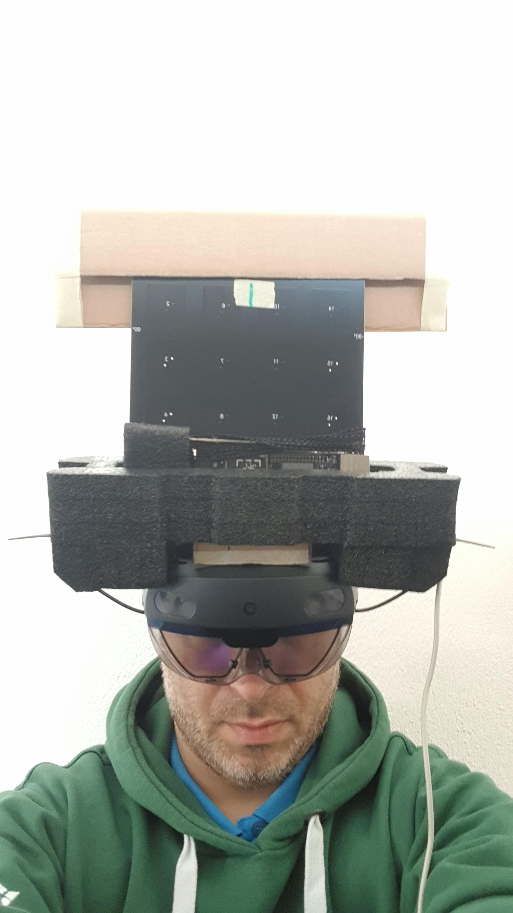
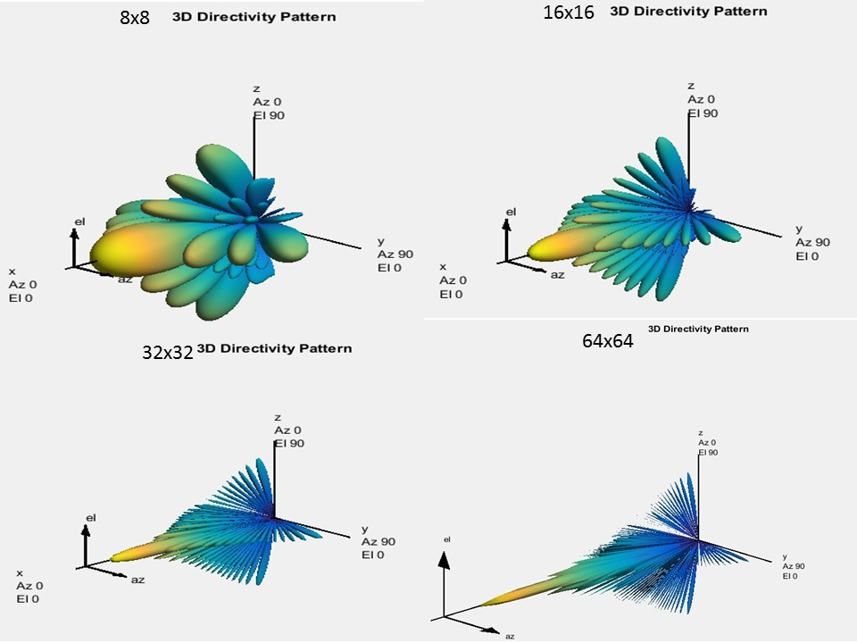
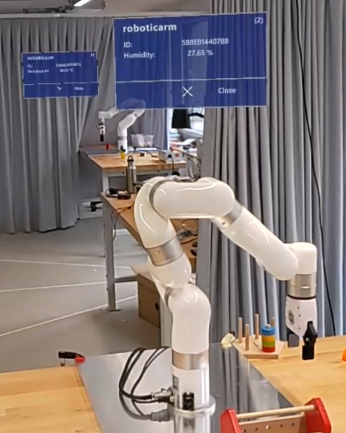
Strecker, Akhunov, Carbone, Garcia, Bektas, Gomez, Mayer, Yildirim: MR Object Identification and Interaction: Fusing Object Situation Information from Heterogeneous Sources. IMWUT 2024
Computersysteme | Institute of Computer Science | University of St.Gallen
10“Any sufficiently advanced technology is indistinguishable from magic.”
Arthur C. Clarke
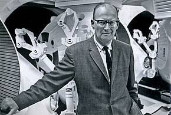
- One of the “Big Three” of English science fiction (with Asimov and Heinlein)
- 2001: A Space Odyssey
- 2010: The Year We Make Contact
Computersysteme | Institute of Computer Science | University of St.Gallen
11Look: «AI»
- This works with an «Artificial Neural Network» (ANN)
- ANNs are also the core of current language models
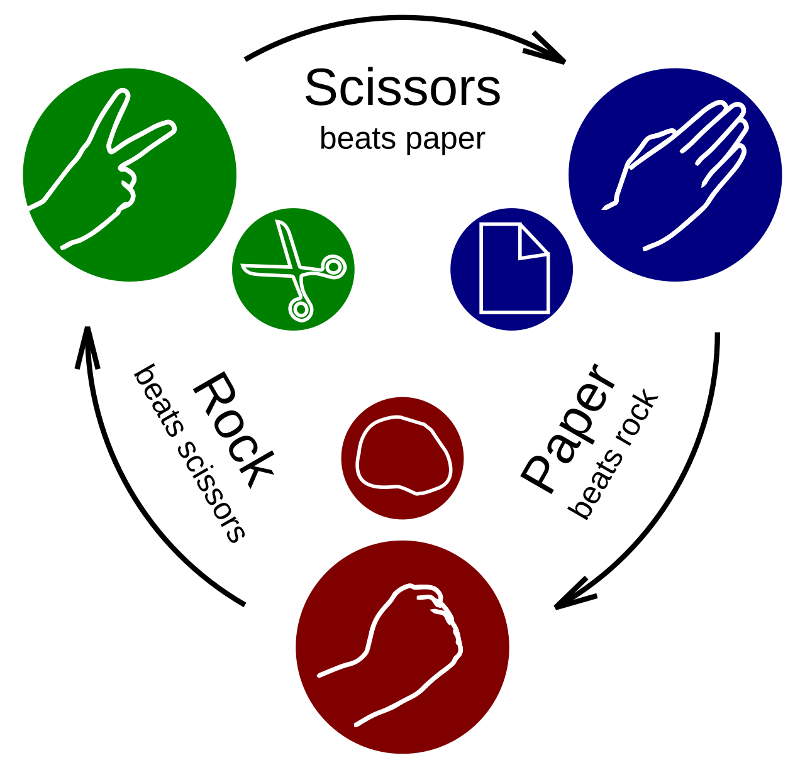
Computersysteme | Institute of Computer Science | University of St.Gallen
12Demo: the rock-paper-scissors AI.From “this” AI to “real” AI…
Computersysteme | Institute of Computer Science | University of St.Gallen
13Millions (small test applications) to billions (bachelor student projects) to trillions (GPT-5).How exactly does it work?
- I'm showing this for a different reason, though…
- The code:
01-rock-paper-scissorsin your lecture materials on Canvas - One level deeper: the chip under the microscope
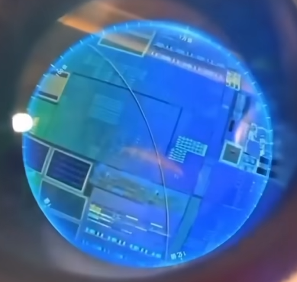
Computersysteme | Institute of Computer Science | University of St.Gallen
14Inside a Chip
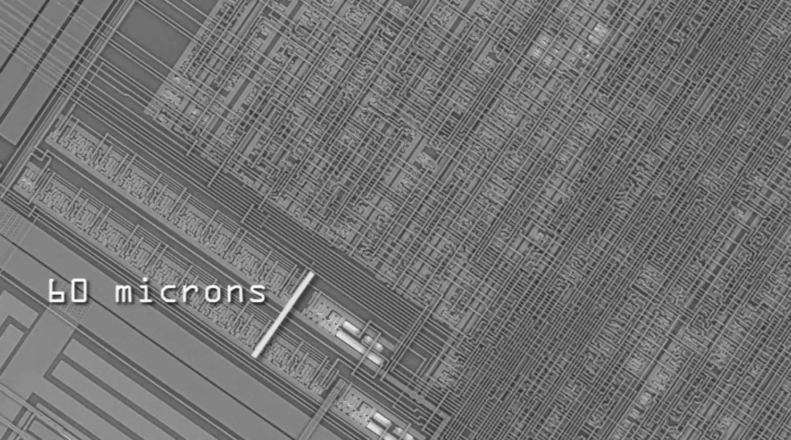
Computersysteme | Institute of Computer Science | University of St.Gallen
15This part computes logical operations on input signals…
Example: 2 inputs, A and B; 2 outputs, C and S.
- S
- 1 if A is different from B, 0 otherwise
- C
- 1 if A and B are both 1, 0 otherwise
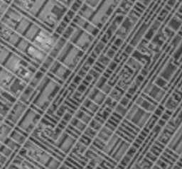
Computersysteme | Institute of Computer Science | University of St.Gallen
16What do we call this operation since primary school?
Inputs A and B; outputs C and S:
- 02 ? 02
- = 0 02
- 12 ? 02
- = 0 12
- 02 ? 12
- = 0 12
- 12 ? 12
- = 1 02
Computersysteme | Institute of Computer Science | University of St.Gallen
17It's called Addition
Inputs A and B; outputs C and S:
- 02 + 02
- = 0 02
- 12 + 02
- = 0 12
- 02 + 12
- = 0 12
- 12 + 12
- = 1 02
C is the carry and S is the sum: 12 + 12 = 102.
Computersysteme | Institute of Computer Science | University of St.Gallen
18If we are able to automatically add numbers, we can also…
- Subtract (that's just adding the negative inverse)
- Multiply (that's just repeated adding)
- Divide (that's just multiplying with the multiplicative inverse)
- Draw roots (that's just smart adding and dividing)
- Render animation movies (that's mostly a ton of matrix multiplications)
- Do machine learning and build «Artificial Intelligence» (that's just a smart combination of the above)
Computersysteme | Institute of Computer Science | University of St.Gallen
19Course Purpose: Get Rid of the Magic!
Understand how processors work:
- How do we encode information for them to “process” it?
- What do they do while “processing” it?
- How do they interact with memory while processing it?
- What have been the major advancements in processor design?

Computersysteme | Institute of Computer Science | University of St.Gallen
20Abstract Course Learning Goals
- You can explain to anyone (kids, experts, the uninterested) how an algorithm in a high-level language becomes executable instructions, and how a processor executes them
- You can use the tools to compile and disassemble programs, and analyze assembly code
- You know memory, processors and their architecture, and the main steps towards modern processors
- You understand deeply that programs are simply instruction sequences that can be executed automatically
- You can place the ways of programming computers, from machine code to AI coding assistants, in their historical context
Computersysteme | Institute of Computer Science | University of St.Gallen
21Detailed Course Learning Goals
Weeks 1 to 6: information representation and processing. Weeks 7 to 12: processors and memory.
| Topic | You can explain… | …and you can |
|---|---|---|
| Data | how different types of data are represented in binary | represent simple data in binary |
| Circuits | how electric circuits process binary data | simulate this processing by hand |
| Compilation | how high-level program code becomes assembly instructions | reverse-engineer a compiled program and purposefully change its behavior |
| Instruction sets | how a realistic instruction set architecture executes assembly instructions | simulate the execution of an assembly program on a given instruction set |
| Memory | how memory is organized, including the memory hierarchy and caching | reason about the memory architecture from the data of a memory-intensive program |
| Processors | the main advancements that led to modern processors, and their limits |
Computersysteme | Institute of Computer Science | University of St.Gallen
22Course Syllabus
Computersysteme | Institute of Computer Science | University of St.Gallen
23Lectures and Tuesday Slots
- The main lectures take place on Wednesdays (10-12) in room 61-152
- We make flexible use of the Tuesday slots (9-10, room 61-152):
- Continuation or repetition of the lecture (core content): come here, especially if you're not sure about everything yet!
- Exercise introduction, support and discussion: come here!
- Deepening of the lecture (additional content, not exam-relevant): come if interested
- I'll announce the Tuesday slot during the lecture the week before
Computersysteme | Institute of Computer Science | University of St.Gallen
24Exercises and Assignments
- Are carried out on loaned RPi 400 hardware
- In this way, you all work on the same system
- Will be puzzle-like
- Integrate what you know from the lecture with additional sources (and your own creativity)
- Count for 20% of the final course grade
- Don't work on them because of these 20%…
- Are done in teams of two
- Form your teams in the first week
- Send both names and a group name to luka.bekavac@unisg.ch
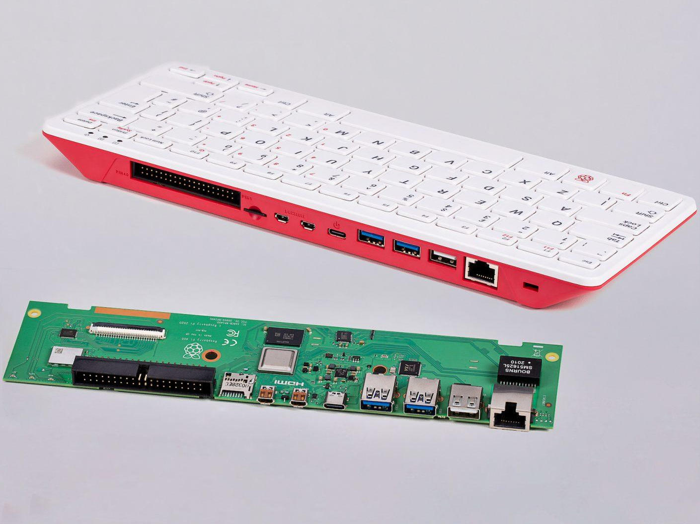
Computersysteme | Institute of Computer Science | University of St.Gallen
25Final Exam
- Takes place after the winter holidays and counts for 80% of the final course grade
- Focuses on lecture contents, but also contains exercise contents
- Is not multiple-choice and contains puzzle-like elements
- Lasts 60 minutes, closed book (only TI-30-series calculators are permitted)
- Last year's exams are online for you on Canvas
Computersysteme | Institute of Computer Science | University of St.Gallen
26How to Study (and Pass)?
Roles
- Lecture: highlight and motivate the material
- Exercise: introduce and bootstrap the assignment
- Assignment: gain experience
Each week's lecture comes with
- Slides: to remember what we talked about
- Study guide (in the slides): what to read and do when studying
- Demos and a quiz on Canvas: run what I show, and get a feeling for what might be asked
Computersysteme | Institute of Computer Science | University of St.Gallen
27Feedback and Backfeed
- Solve and understand the assignments
- They are structured the way they are on purpose
- They cannot be done in passing but require long commitment
- You need to structure the contents yourselves: think «puzzle»
- Start working on them much, much earlier
- Understand the lecture contents
- We're here to support you! Send us your questions or make an appointment with us
Computersysteme | Institute of Computer Science | University of St.Gallen
28Course Context: The Book
I'll use the textbook Computer Systems: A Programmer's Perspective (3rd edition) by Bryant & O'Hallaron.
It goes much beyond this course, and it is available free as an e-book from the HSG library. Read it!
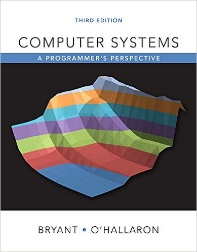
Computersysteme | Institute of Computer Science | University of St.Gallen
29Course Context: Where This Course Comes From
Parts of this course are based on my own and colleagues' former courses:
- S. Mayer: ICT Computer Architectures, TU Graz
- S. Mayer and F. Michahelles: IoT: Foundations and Applications, UC Berkeley
- T. Roscoe: Computer Architecture and Systems Programming, ETH Zurich
- S. Mayer: Fundamentals of Computer Science; Introduction to Computer Systems and Networks, University of St.Gallen
The follow-on courses Computer Networks and Distributed Systems build on this course!
Computersysteme | Institute of Computer Science | University of St.Gallen
30Course Context: Programming
- We directly interface with Grundlagen der Informatik and Introduction to Programming
- You will mostly program in C and C++: we are very close to the processor, and these languages let us exploit this closeness
- You will program in this course, but it is not a programming-focused course
- You will (slowly) develop an intuitive understanding of the code you work with
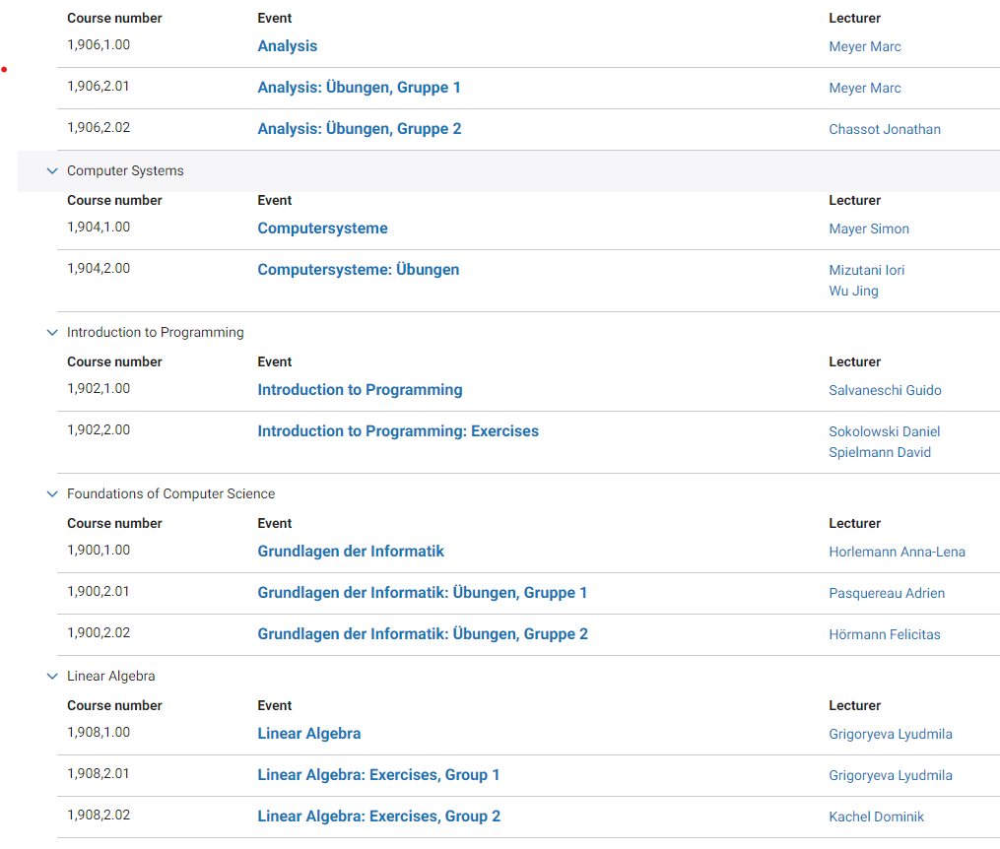
Computersysteme | Institute of Computer Science | University of St.Gallen
31Any Questions / Comments / Doubts / Concerns?

Computersysteme | Institute of Computer Science | University of St.Gallen
32Computersysteme
Information = Bits and Bytes
Our Menu
Information Basics: Numbers, Bits, Bytes, Encodings
Computing Basics: Transistors and Circuits
Processor Basics
Computersysteme | Institute of Computer Science | University of St.Gallen
34Good Questions…
- Example [x² ≥ 0], x = 3.1415: 9.86902
- Example [x² ≥ 0], x = 30000: 900000000
- Example [x² ≥ 0], x = 50000: −1794967296
int x;
float a = 3.1415;
int b = 30000;
int c = 50000;
cin >> x; // Wait for user input
cout << "Example [x^2 >= 0], x = "
<< c << " : " << c*c << endl;Computersysteme | Institute of Computer Science | University of St.Gallen
352^32 = 4'294'967'296 (show it on the calculator). 50000² = 2'500'000'000; 2'500'000'000 − 4'294'967'296 = −1'794'967'296.Yes, you can store data on a bird
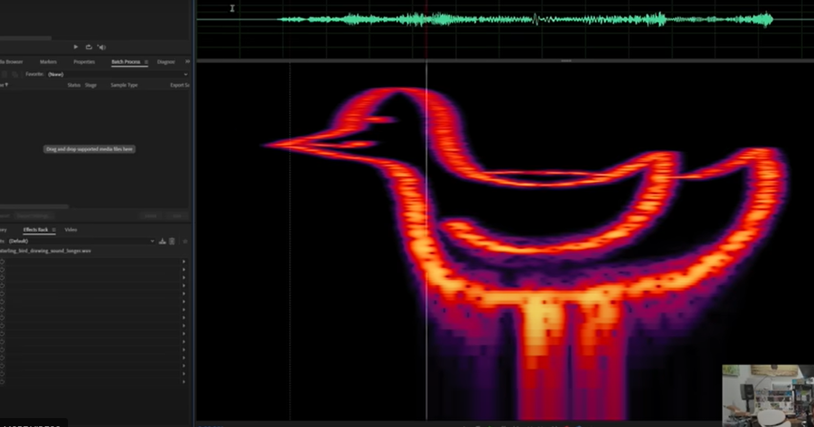
Computersysteme | Institute of Computer Science | University of St.Gallen
36Magic & Quiz
“Think of a number. Hand me all cards that contain this number. I'll tell you your number in almost no time.”
- Teams of 2, take 5 min:
- Find the pattern
- Replicate the trick
- Build a “Magic Computer” for the numbers 0-13
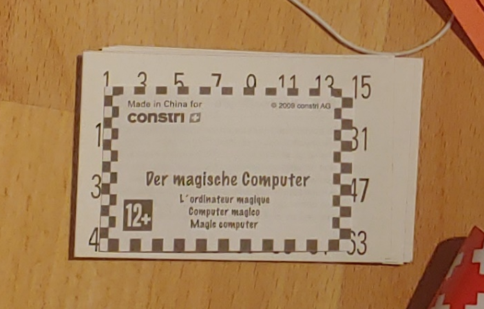
Computersysteme | Institute of Computer Science | University of St.Gallen
37Magic & Quiz: Questions
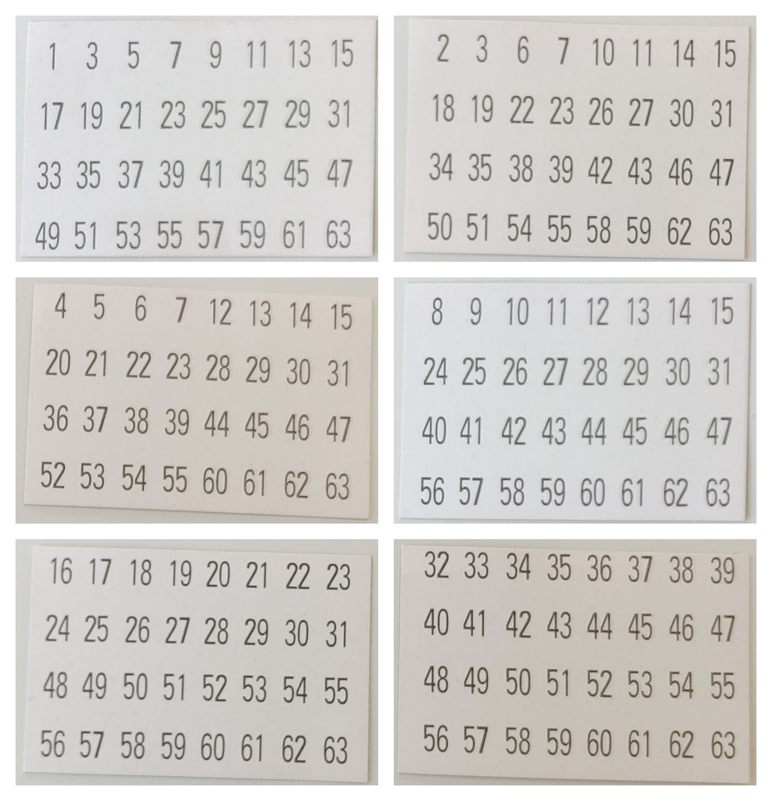
Computersysteme | Institute of Computer Science | University of St.Gallen
38Magic & Quiz: Observations
- (Not) handing over one of the cards is a binary decision
- The volunteer makes six such decisions
- Thereby, they encode one out of 26 (= 64) states
- That state is the number the volunteer was thinking of
card: 1 2 4 8 16 32 "4" 0 0 1 0 0 0 "7" 1 1 1 0 0 0 "63" 1 1 1 1 1 1 "0" 0 0 0 0 0 0
Computersysteme | Institute of Computer Science | University of St.Gallen
39Why Computers?
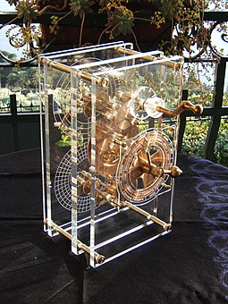
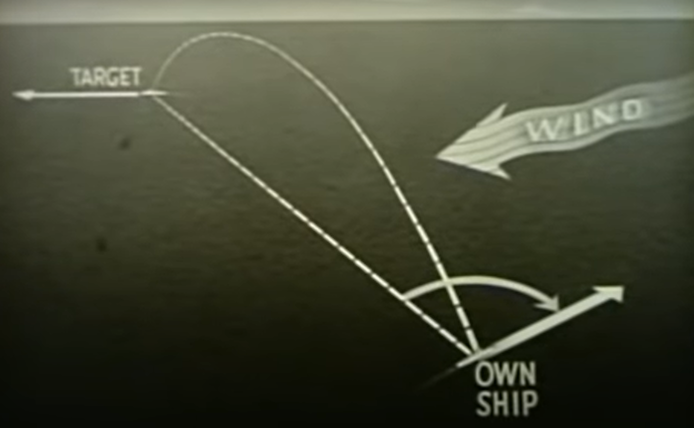
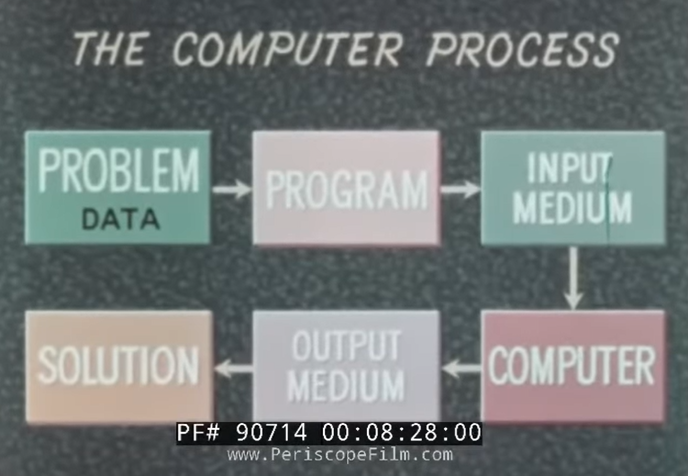
Computersysteme | Institute of Computer Science | University of St.Gallen
40A Tour of Computer Systems…
| Step | Building blocks | Where |
|---|---|---|
| Information | Binary digits + context: numbers, text, pixels and colors, instructions | Today |
| Logic + arithmetic | School mathematics (logic, set theory); logic operations (NOT, NOR, …, NAND) | Lecture 2 |
| Electronics | Logic gates from electronic components (today: transistors) | Lecture 2 |
| Calculator | Adder circuits and circuits for other arithmetic functions: a general-purpose calculator! | Lecture 2 |
| Processor | Function selector, arithmetic/logic unit, control unit, registers: voilà, a CPU! | Lecture 3 |
| Programs | Instruction sets, machine code and assembly language | Lectures 3 and 4 |
Computersysteme | Institute of Computer Science | University of St.Gallen
41Counting Sheep in 16 Bits

Computersysteme | Institute of Computer Science | University of St.Gallen
42Stripping Away the “Magic”
- Goal: understand the inner workings of a computer system
- We'll start with the simple (?) concept of information and build upon this foundation
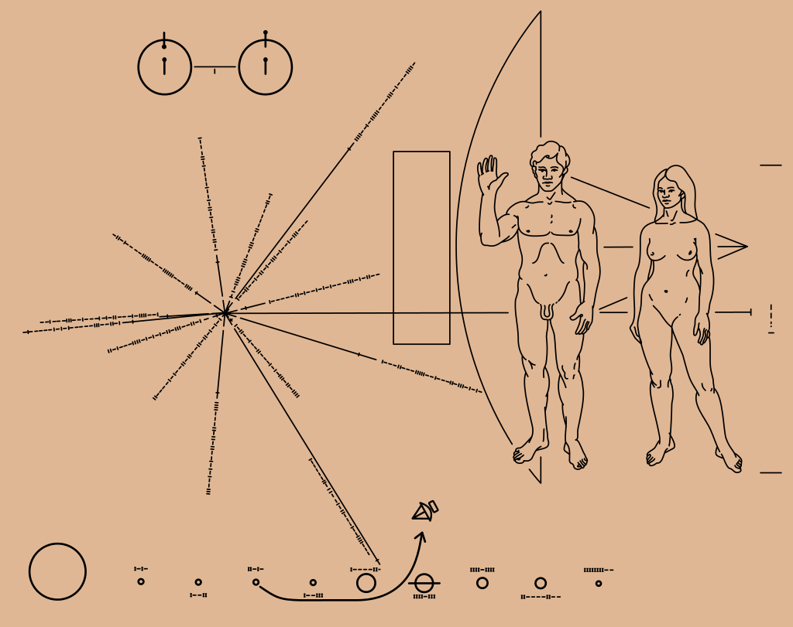
Computersysteme | Institute of Computer Science | University of St.Gallen
43What's “Information” in Computer Science?
In CS, all information = bits + context.
- Example:
img.jpg- Display as text (ANSI encoding)
- Display as hexadecimal numbers (in the demo, I use the HxD program)
- Display as binary code, i.e., as bits (mothereff.in/binary-ascii)
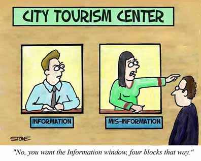
Computersysteme | Institute of Computer Science | University of St.Gallen
44In CS, All Information = Bits + Context
Interpret the bit string 11111111 00111111 11111111 00111111 (4 × 8 = 32 bits)!
- Hexadecimal number
- FF 3F FF 3F
- Unsigned decimal number
- 4'282'384'191
- Signed decimal number (2's complement, 32 bits)
- −12'583'105
- Floating-point number (IEEE 754)
- −2.5520786 × 1038
- Text in ANSI encoding
- ÿ?ÿ?
- Also
- a pixel at 32-bit color depth, or an x86 instruction such as
addq %rax,%rbx
You'll understand better in a week, and much better in 6 weeks!
Try it: 2's complement · IEEE 754 · binary to ASCII
Computersysteme | Institute of Computer Science | University of St.Gallen
45addq %rax,%rbx: “Add the two numbers stored at locations %rax and %rbx, and store the result in location %rbx.”Bits and Programs: An Instruction Set for This Room
An instruction set architecture (ISA) says which bits mean which instruction. Our instruction set:
00- Clap
01- Shout
10- Silence
11- Stamp
Computersysteme | Institute of Computer Science | University of St.Gallen
4600 10 01 11 00 01: clap, silence, shout, stamp, clap, shout.Bits: Binary Digits
- Logic: basic representation of the logical values True and False
- Practicality: many easily feasible physical representations
- Punched card
- hole vs. no hole
- Electrical switch
- on vs. off
- SSD
- high vs. low electrical charge
- Fibre optics
- light vs. no light
- Credit card
- polarity of magnetization
- Bar code
- thick line vs. narrow line
- Station clock
- light vs. no light
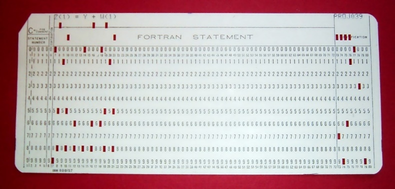
Computersysteme | Institute of Computer Science | University of St.Gallen
47Using Binary, Arithmetic and Logic Can Be Combined!

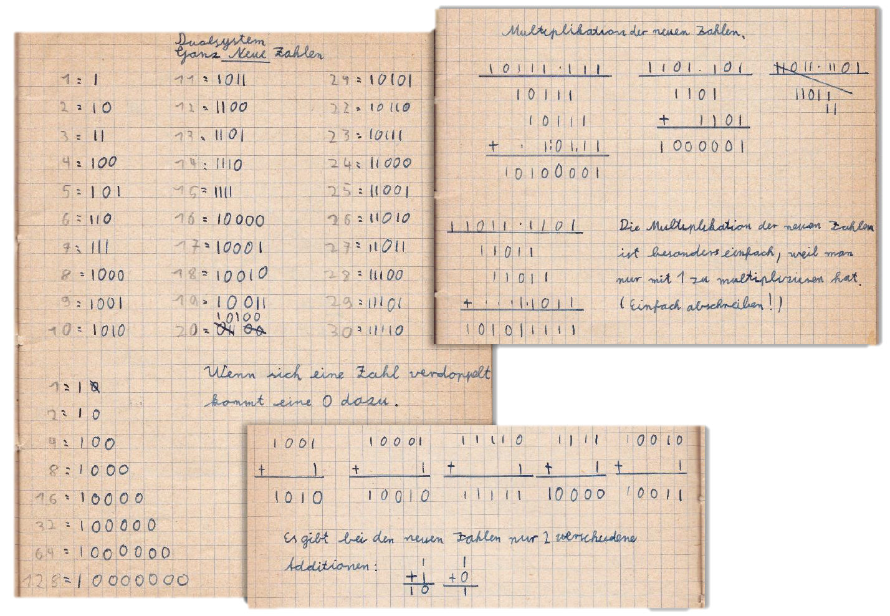
Computersysteme | Institute of Computer Science | University of St.Gallen
48Bits + Context: A Clock
Bits that represent three numbers… in this context, that's a clock!
- First number: 5 bits
- Second number: 6 bits
- Third number: 6 bits
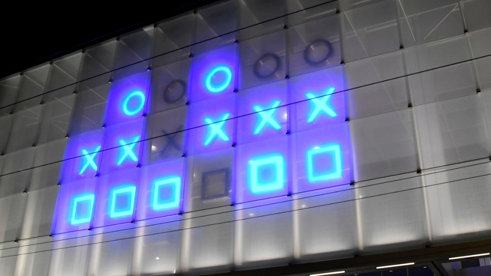
Computersysteme | Institute of Computer Science | University of St.Gallen
49A Decimal Clock and a Binary Clock
| Decimal clock (base 10) | Binary clock (base 2) | |
|---|---|---|
| Hour | 20 = 2 × 101 + 0 × 100 | 10100b = 1 × 24 + 0 × 23 + 1 × 22 + 0 × 21 + 0 × 20 = 16 + 4 = 20 |
| Minute | 55 = 5 × 101 + 5 × 100 | 110111b = 32 + 16 + 0 + 4 + 2 + 1 = 55 |
| Second | 59 = 5 × 101 + 9 × 100 | 111011b = 32 + 16 + 8 + 0 + 2 + 1 = 59 |
Convention: we write decimals as we are used to (20); binary values get a trailing lower-case b (10100b, i.e., decimal 20 as well).
Computersysteme | Institute of Computer Science | University of St.Gallen
50Jokes?!
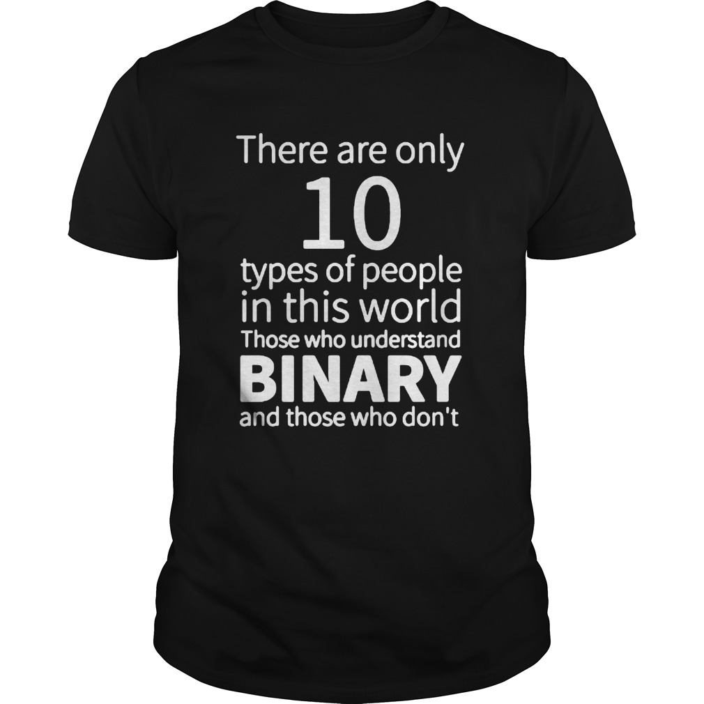
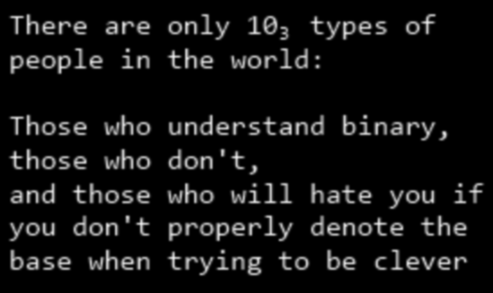
Make sure you fully understand both these jokes!
Computersysteme | Institute of Computer Science | University of St.Gallen
51Hexadecimal numbers work in the same way!
Digits: decimal 0-9, binary 0-1, hexadecimal 0-9 and A-F. A hexadecimal clock shows 12 : 2A : 1F.
| Hexadecimal (base 16) | Decimal | |
|---|---|---|
| Hour | 0x12 = 1 × 161 + 2 × 160 = 16 + 2 | 18 |
| Minute | 0x2A = 2 × 161 + 10 × 160 = 32 + 10 | 42 |
| Second | 0x1F = 1 × 161 + 15 × 160 = 16 + 15 | 31 |
Convention: hexadecimal values get a leading 0x. So 18 = 10010b = 0x12.
Computersysteme | Institute of Computer Science | University of St.Gallen
52Quick Exercises
Computersysteme | Institute of Computer Science | University of St.Gallen
53Look! Some More Binary
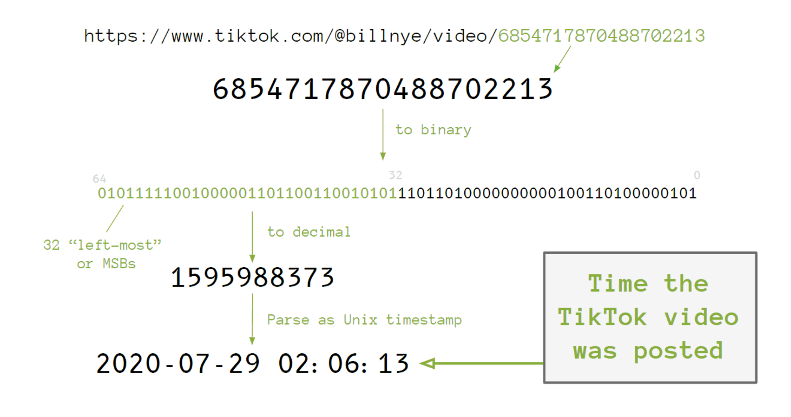
Tinkering with TikTok Timestamps
Computersysteme | Institute of Computer Science | University of St.Gallen
54Not Just Numbers: Encodings!
- For data, we talk about bytes rather than bits
- 1 byte = historically, the number of bits used to encode a single character; today, 8 bits by de-facto standard
- 8 bits encode the values 0…255 (from 20 − 1 to 28 − 1)
- Anything can be represented in binary; we've already seen colors in hexadecimal
- Example: Windows-1252, typically given in hexadecimal; the most widespread legacy single-byte encoding (today, UTF-8 dominates)
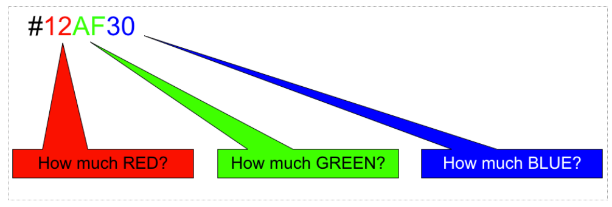
An easy-to-read history of encodings: gammon.com.au/unicode
Computersysteme | Institute of Computer Science | University of St.Gallen
55Encoding Questions
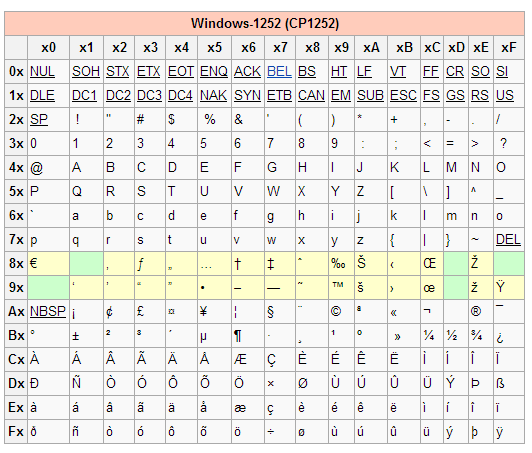
Full emoji list of the Unicode Consortium
Computersysteme | Institute of Computer Science | University of St.Gallen
56Information Representation in Computers
As you know, the accurate representation of the number π (3.1415…) is infinitely long.
Numbers that do not have infinite representations are affected as well!
Machine representations of numbers are finite approximations, and they can behave in unexpected ways.
Computersysteme | Institute of Computer Science | University of St.Gallen
57Some Surprises
- x² ≥ 0?
- (d + e) + f == d + (e + f)?
- (x + 1) > x?
float a = 3.1415; int b = 30000; int c = 50000; float d, e, f; d = 1e20; e = -1e20; f = 3.1415; int puzzle = ?;
Computersysteme | Institute of Computer Science | University of St.Gallen
58How finite are typical data types (in C)?
| C data type | Size (x86-64) | Lowest value | Highest value |
|---|---|---|---|
| char | 8 bits | −128 | 127 |
| short | 16 bits | −32'768 | 32'767 |
| int | 32 bits | −2'147'483'648 | 2'147'483'647 |
| unsigned int (similar: unsigned char, short, long) | 32 bits | 0 | 4'294'967'295 |
| long | 64 bits | −9'223'372'036'854'775'808 | 9'223'372'036'854'775'807 |
| float | 32 bits | −3.4 × 1038 | 3.4 × 1038 |
| double | 64 bits | −1.7 × 10308 | 1.7 × 10308 |
| long double | 128 bits | −3.4 × 104932 | 3.4 × 104932 |
| pointer (memory address) | 64 bits | 0 | 18'446'744'073'709'551'615 |
Computersysteme | Institute of Computer Science | University of St.Gallen
59Real Issues!
“The internal SRI software exception was caused during execution of a data conversion from 64-bit floating point to 16-bit signed integer value. The floating point number which was converted had a value greater than what could be represented by a 16-bit signed integer.”
declare v_veloc_sensor: float; -- 64 bit h_veloc_sensor: float; -- 64 bit v_veloc_bias: integer; -- 16 bit h_veloc_bias: integer; -- 16 bit begin sensor_get(v_veloc_sensor); sensor_get(h_veloc_sensor); v_veloc_bias := integer(v_veloc_sensor); h_veloc_bias := integer(h_veloc_sensor); decide_bias(v_veloc_bias, h_veloc_bias);
Code courtesy of Dr. Peter Tröger, TU Chemnitz
Computersysteme | Institute of Computer Science | University of St.Gallen
60Ariane 5, Flight 501
Computersysteme | Institute of Computer Science | University of St.Gallen
61Why does this happen?
| C data type | Size (x86-64) | Lowest value | Highest value |
|---|---|---|---|
| int | 32 bits | −2'147'483'648 | 2'147'483'647 |
| unsigned int | 32 bits | 0 | 4'294'967'295 |
| float | 32 bits | −3.4 × 1038 | 3.4 × 1038 |
Floating-point numbers are most precise very close to zero. Their density decreases with distance to zero.
Computersysteme | Institute of Computer Science | University of St.Gallen
62The Precision of Floating-Point Numbers
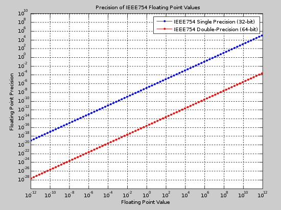
Computersysteme | Institute of Computer Science | University of St.Gallen
63Excursion: Representing Integers
Unsigned ints
- Every bit counts with its positive weight 2i
Signed ints: 2's complement
- First bit: sign bit, with the negative weight −2w−1
- (Asymmetric) range: |TMin| = TMax + 1
- UMax = 2 × TMax + 1
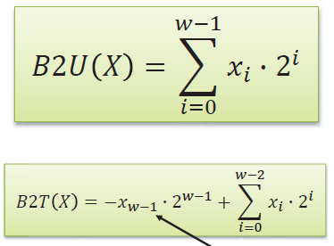
Computersysteme | Institute of Computer Science | University of St.Gallen
64You know this already! ;-)
Computersysteme | Institute of Computer Science | University of St.Gallen
65How do we represent negative numbers?
Three ways to read 4 bits:
| Representation | Range | Note |
|---|---|---|
| Unsigned | 0000b (0) … 1111b (15) | No negative numbers |
| Sign bit + number | 1111b (−7) … 1000b (−0), 0000b (+0) … 0111b (+7) | First bit = sign bit, remaining bits = the number itself. Two zeros! This is not 2's complement |
| 2's complement | 1000b (−8) … 0000b (0) … 0111b (+7) | Weights −23, 22, 21, 20 |
Computersysteme | Institute of Computer Science | University of St.Gallen
662's Complement Examples
Word size: 4 bits (−8…7)
| Bits | Calculation | Value |
|---|---|---|
| 00002 | 0 | 0 |
| 01012 | 4 + 1 | 5 |
| 01112 | 4 + 2 + 1 | 7 |
| 10002 | −8 | −8 |
| 10012 | 1 × (−23) + 0 × 22 + 0 × 21 + 1 × 20 | −7 |
| 11112 | −8 + 4 + 2 + 1 | −1 |
Computersysteme | Institute of Computer Science | University of St.Gallen
67Overflow!
Calculating 2'147'483'647 + 1 in 2's complement on 32 bits:
0111 1111 … 1111b = 2'147'483'647, the largest int+ 0000 0000 … 0001b = 1= 1000 0000 … 0000b = −2'147'483'648, the smallest int!
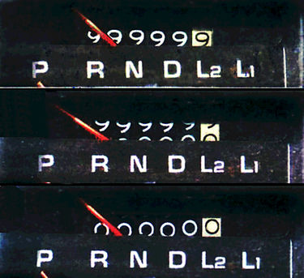
Computersysteme | Institute of Computer Science | University of St.Gallen
68Arithmetic
2's complement negation
- Flip all bits, then add one: ~x + 1 = −x
Unsigned addition
- Standard addition
- Ignores the last carry: positive overflow
2's complement addition
- Identical bit-level behavior; the remaining bits are read as 2's complement
- Positive and negative overflow may occur
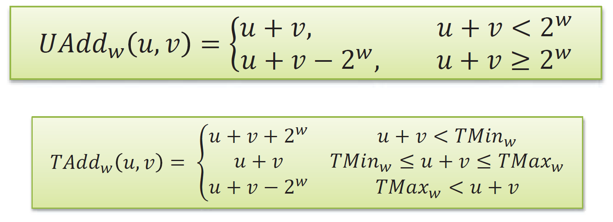
Computersysteme | Institute of Computer Science | University of St.Gallen
692's Complement Addition Example
Word size: 4 bits (−8…7)
| Decimal | Binary | Result | |
|---|---|---|---|
| −8 + −8 | 10002 + 10002 = (1)00002 | 0 | negative overflow |
| −8 + −1 | 10002 + 11112 = (1)01112 | 7 | negative overflow |
| 3 + 3 | 00112 + 00112 = 01102 | 6 | |
| 3 + 5 | 00112 + 01012 = 10002 | −8 | positive overflow |
| 7 + 7 | 01112 + 01112 = 11102 | −2 | positive overflow |
Computersysteme | Institute of Computer Science | University of St.Gallen
70Unsigned Addition and Negation
- Unsigned addition: 0010b + 0010b = 0100b is correct
- 1010b + 1011b = 0101b is an overflow: 10 + 11 − 16 = 5
- Why 16? 16 = 24, i.e., 2word size
- 2's complement negation: flip the bits (~), then add one
1010b (10) + 1011b (11) = 0101b ( 5) 0101b ( 5) ~0101b = 1010b (-6) -0101b = 1011b (-5)
Computersysteme | Institute of Computer Science | University of St.Gallen
71Multiplication and Shifting
- Multiplication (signed and unsigned): standard, ignoring the overflow bits
- (x << k) multiplies by 2k, both for signed and unsigned!
- (x >> k) divides by 2k and rounds down
- Unsigned: «logical shift» (shift in 0s)
- Signed: «arithmetic shift» (shift in copies of the most significant bit)
- Careful: for x < 0, this rounds towards minus infinity, but C integer division truncates towards zero
- The compiler replaces multiplications and divisions by powers of two with (much faster) shift-and-add operations; for signed division, it first adds a bias
Computersysteme | Institute of Computer Science | University of St.Gallen
72Multiplication and Shifting Questions
Demo: godbolt.org
Computersysteme | Institute of Computer Science | University of St.Gallen
73(−7)/2 = −3 in C, but 1001 >> 1 = 1100 = −4. (+7)/2 = 3 and 0111 >> 1 = 0011 = 3.Expanding, Truncating, Casting
Expanding (e.g., short → int)
- Unsigned: add zeros
- Signed: sign extension
Truncating (e.g., unsigned int → unsigned short)
- Simple bit truncation and re-interpretation
- Expected behavior for small enough numbers
Casting (signed ↔ unsigned)
- Keeps the bit pattern: a change of context, not of bits
- Can invert the order; take care with implicit casts in assignments and procedure calls
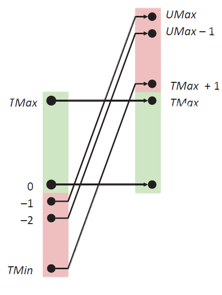
Computersysteme | Institute of Computer Science | University of St.Gallen
74Take extreme care with mixed expressions
#include <stdio.h>
int main(void)
{
unsigned int plus_one = 1;
int minus_one = -1;
if(plus_one < minus_one)
printf("1 < -1");
else
printf("boring");
return 0;
}Run it: codepad.org/yPhYCMFO
Computersysteme | Institute of Computer Science | University of St.Gallen
75Solution: Look at the Bits!
- What is the binary representation of the unsigned int 1?
- What is the binary representation of the int −1?
- In CS, all information = bits + context. But here, we change the context!
#include <stdio.h>
int main(void)
{
unsigned int plus_one = 1;
int minus_one = -1;
if(plus_one < minus_one)
printf("1 < -1");
else
printf("boring");
return 0;
}Computersysteme | Institute of Computer Science | University of St.Gallen
76In the comparison, minus_one is converted to unsigned: 0xFFFFFFFF = 4'294'967'295, so the program prints 1 < -1.Homework
- Specification: copy bytes from the kernel to
user_dest, but never copy more thanmaxlenbytes lenis KSIZE if KSIZE < maxlen, otherwise maxlen- What happens for a negative
maxlen? - This is the
getpeernamelibrary function of FreeBSD
/* Kernel memory, user-accessible data */
#define KSIZE 1024
char kbuf[KSIZE];
/* Copy at most maxlen bytes to user */
int copy_from_kernel(void *user_dest,
int maxlen) {
/* len = min(buffer size, maxlen) */
int len = KSIZE<maxlen ? KSIZE : maxlen;
memcpy(user_dest, kbuf, len);
return len;
}Computersysteme | Institute of Computer Science | University of St.Gallen
77This happens in real software
Computersysteme | Institute of Computer Science | University of St.Gallen
78Our Journey So Far…
| Step | Building blocks | Where |
|---|---|---|
| Information | Binary digits + context: numbers, text, pixels and colors, instructions | Today: done! |
| Logic + arithmetic | School mathematics (logic, set theory); logic operations (NOT, NOR, …, NAND) | Lecture 2 |
| Electronics | Logic gates from electronic components (today: transistors) | Lecture 2 |
| Calculator | Adder circuits and circuits for other arithmetic functions: a general-purpose calculator! | Lecture 2 |
| Processor | Function selector, arithmetic/logic unit, control unit, registers: voilà, a CPU! | Lecture 3 |
| Programs | Instruction sets, machine code and assembly language | Lectures 3 and 4 |
Computersysteme | Institute of Computer Science | University of St.Gallen
79Any Questions / Comments / Doubts / Concerns?
Take-Homes
- Computers represent all information as finite sequences of bits, interpreted in context
- Number representations (and all other data types) are necessarily finite
- Programming languages use a fixed number of bits per instance (e.g., 32 bits for a C int)
- Standards give the context: IEEE 754 (floating point), ISO 10646 «Unicode» (text), ISO 10918-1 (JPEG)
- You can create your own mapping (but is it useful?)
Next: Computing on Bits
Computersysteme | Institute of Computer Science | University of St.Gallen
80How to Study this Material?
Basic Depth
- Read chapters 1 (A Tour of Computer Systems) and 2 (Representing and Manipulating Information; we covered about a third) of Bryant & O'Hallaron
- Look up all technical terms of the syllabus; do use Wikipedia, e.g. Two's complement
- Internalize bit-level representations of numbers: everything depends on them!
- Watch the rest of the historical videos and play with the examples
Advanced Depth
- Read chapters 1 & 2 in depth and solve the book's practice problems
- Find the connections between our course and Anna-Lena's course yourselves
- How about a look at our research? ;-)
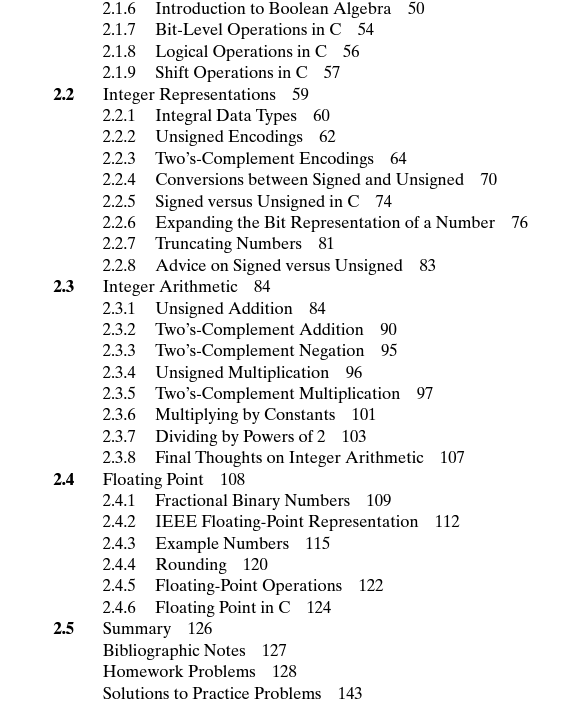
Computersysteme | Institute of Computer Science | University of St.Gallen
81Preparing for the next lecture…
We'll build on it in Lecture 2, Computing on Bits.
Solve the first five levels of the NAND Game!
nandgame.comComputersysteme | Institute of Computer Science | University of St.Gallen
82Preparing for the First Exercise: The Shell
Verify that you can run the command line (shell, terminal) on your machine: PowerShell on Windows, Terminal on Mac, whatever you have on Linux.
- Navigation
cd(change directory)- Inspecting
ls(list)- Printing a file's content
cat <filename>(concatenate)- Compiling (with g++)
g++ <filename> -o program- Running a program
./program- Deleting a file
rm(remove)- Autocompletion
<Tab>
Computersysteme | Institute of Computer Science | University of St.Gallen
83Preparing for the First Exercise: A C Compiler
- From now on, you need a computer set up to compile C code (with gcc/g++):
- Windows: set up the Windows Subsystem for Linux
- Mac: follow this guide
- Linux: run
sudo apt install gcc
- Try the compiler on
calculate_pi.cpp(in the zip file on Canvas): go to its folder, compile it, run it and look at its output
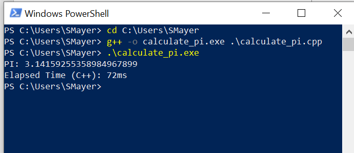
Computersysteme | Institute of Computer Science | University of St.Gallen
84